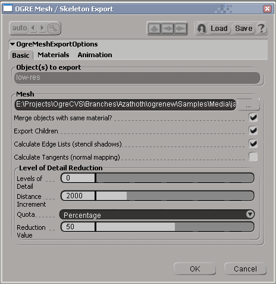
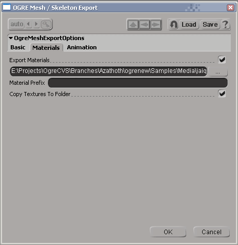
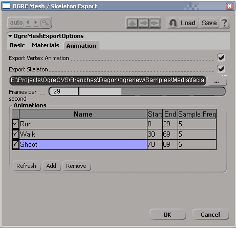

Summary
OGRE (Object-Oriented Graphics Rendering Engine) is a scene-oriented, flexible 3D engine written in C++ designed to make it easier and more intuitive for developers to produce games and demos utilising 3D hardware. The class
library abstracts all the details of using the underlying system libraries like Direct3D and OpenGL and provides an interface based on world objects and other intuitive classes.
This distribution contains the files required to export OGRE .mesh, .skeleton and .material files from SoftImage|XSI. Currently supported XSI versions are 6.5 up to Softimage 2011
IMPORTANT: This exporter only works with a full version of XSI (Foundation or better). It will not work with the trial version.
How To Install
Features
How To Use
Using the Export Command
Tips
Change Log
How to Install
If you are using the installer, you don't need to do anything except to run it and point it at your XSI folder. If you're installing from source, you need to do the following:
- If 'OgreMain.dll' is included, copy it (and OgreMain_d.dll if you wish to use the debug version anytime) into $(XSI_ROOT)\Application\bin
- copy OgreXSIExporter.dll into $(XSI_ROOT)\Application\plugins
Back To Top
Features
The following features are supported:
- Exporting selected PolygonMesh objects direct to the OGRE binary .mesh format
- Exports vertex position, normals, multiple UV sets and vertex colours
- Polygon clusters used to change materials in a single PolygonMesh are exported as separate SubMeshes
- By default, separate PolygonMesh objects which use the same material are merged for efficiency
- Mesh vertices are index-organised for efficiency
- Exporting of up to 4 weighted bone assignments per vertex
- Generation of edge lists, tangent vectors, and LOD levels during export (optional)
- Exporting of deformers (bone chains, nulls used as deformers) direct to binary .skeleton format
- Exporting animations from the mixer, sampled IK skeletal animation and shape animation (vertex animation)
- Exporting of RealTime shaders on materials (OpenGL and DirectX)
- Exporting meshes with subdivsion using the current subD level
- Hidden polygons won't be exported. To hide polygons, create a cluster with clsvisibility property by selecting polygons then click Model -> Property -> Polygon Cluster Visibility)
- Exporting directly from script (no GUI)
Back To Top
How To Use
It's a simple case of selecting the objects you wish to export, and clicking File > Export > OGRE Mesh / Skeleton... to bring up the OGRE export dialog.

The first page of the exporter is concerned with the basic mesh export settings.
Object(s) to export:
This is pre-populated with your current selection
Mesh: This is the .mesh file to export - you must complete this. Once you have selected a file, by default the other file-related fields in the exporter will be
completed for you based on the same filename pattern.
Merge objects with the same material?: If this is checked, all polygon mesh objects with the same material will be merged into one for efficiency. Most of the
time you want this; but if you want more control over the splitting of your SubMesh objects, deselect it.
Calculate Edge Lists: Select this if you want your mesh to support stencil shadows. This increases the size of the resulting .mesh object.
Calculate Tangents: Select this if you wish to use normal mapping or some other technique which requires tangents vectors.
Levels of Detail: Increase this value above 0 if you want lower LODs to be generated for
this mesh. The rest of the parameters control how the mesh is reduced.

Export Materials: Whether to export a .material script or not. The field underneath contains the name of the script to export, and is pre-populated based on the
.mesh selection on the first page.
Material Prefix: Optional prefix to give the name of each material.
Copy Textures To Folder: If selected, any textures referenced in your materials will be
copied into the same folder as the .material script.

Export Skeleton: If checked, skeleton and animation will be exported. Cannot be selected if no skeleton is referenced by this mesh. The field underneath
determines the target.skeleton file (pre-populated based on the mesh name).
Frames per second: How to translate XSI frames into time values. Will be populated based on XSI's playback speed, but you can alter it if you wish.
Animations: This is a list of animations, which should be pre-populated with what you have in the Mixer, with splits between multiple animations 'best guessed' by
the exporter, but you can tweak them afterwards. You can alter all the fields in the table.
Export?: A checkbox determining whether to export this animation
Name: The name of the animation.
Start: The first frame of the animation
End: The last frame of the animation
Sample Freq: Skeletal animation which is based on Inverse Kinematics (IK) or other
constraints needs to be 'sampled' to turn it into Forward Kinematics (FK) in OGRE. This option determines the number of frames between each sample. For
vertex animation, this is ignored.
Back To Top
Back To Top
Using the Export Command
It is now possible to automate the exporting process by using 'OgreMeshExportCommand' from a script in Softimage. Below is a list of parameters of that command:
- targetMeshFileName: Exported mesh file name (default: "c:/default.mesh")
-
mergeSubmeshes: Merge objects with same material? If false, a separate named SubMesh will be created for every PolygonMesh preserving your model divisions. If true, the exporter will merge all PolygonMesh objects with
the same material, which is more efficient, but does not preserve your modelling divisions. (default: true)
- exportChildren: If true, children of all selected objects will be exported.(default: true)
- calculateEdgeLists: Calculate Edge Lists (stencil shadows). (default: true)
- calculateTangents: Calculate Tangents (normal mapping). (default: false)
- tangentSemantic: Tangent semantic. True for tangent, false for texture coords. (default: true)
- tangentsSplitMirrored: Split tangents at UV mirror. (default: false)
- tangentsSplitRotated: Split tangents at UV rotation. (default: false)
- tangentsUseParity: 4D Tangents. (default: false)
- numLodLevels: Levels of Detail. (default: 0)
- lodDistanceIncrement: Distance Increment. (default: 2000)
- lodQuota: Reduction Style. True for percentage, false for constant. (default: true)
- lodReduction: Reduction Value. (default: 50)
- exportMaterials: Export Materials. (default: true)
- targetMaterialFileName: Material Filename. (default: "c:/default.material")
- materialPrefix: Material Prefix. (default: "")
- copyTextures: Copy Textures To Folder. (default: true)
- exportVertexAnimation: Export Vertex Animation. (default: true)
- exportSkeleton: Export Skeleton. (default: true)
- targetSkeletonFilename: Skeleton Filename. (default: "c:/default.skeleton")
- fps: Frames per second. (default: 24)
- animationList: List of animations to be exported. Use GridData to populate the values. (default: null)
Back To Top
Tips
Important modelling / animating considerations:
- The exporter writes one SubMesh per material if 'Merge objects with the same material' is selected. If unselected, you get one SubMesh per PolygonMesh (or clusters with differing materials within them)
- The exporter writes all your export settings into a custom property in your scene, meaning that all your preferences are remembered for this scene, even between loads.
- The exporter only exports PolygonMesh objects, so if you work with higher-order surfaces like NURBS you must create a PolygonMesh object from these surfaces before exporting
- The exporter writes a single .mesh at a time and combines all the objects selected (and their children, if you select that option)
- All global modelling coordinates are preserved, so the origin of your resulting .mesh will be where the world origin is in XSI
- Animations must be placed in the mixer to be picked up by the exporter
- The exporter automatically samples any skeletal IK animation and turns it in to FK, optimising the animation as it does it to remove redundant keys and tracks.
-
Shape animation should be expressed in shape reference mode 'Local' if you expect the results to work in combination with skeletal animation. If you don't use skeletal animation, either 'Local' or 'Object' will work. You
shouldn't use 'Absolute' mode.
-
Make sure you remove any active shape key composition on the modifier stack for your meshes before exporting, they can mess up the initial base state of the mesh as seen by the exporter, since the shape keys are relative to
the mesh before this composition.
Important material considerations:
- The defaults that XSI gives to some real time material components are not normally what you'd want (and not the OGRE default). For example:
- OGLDraw and DXDraw objects have a default culling mode of 'None', meaning all materials are double-sided by default, you will probably want to change that for efficiency
-
OGLTexture and DXTexture both default to no mip mapping. You will probably want to alter the defaults so that you have at least sampled point mipmapping (in DXTexture this is a separate setting, in OGLTexture it's
combined with the minification filter)
Back To Top
Change Log
1.7.0
- Fixed a bug causing the bounding box to be larger than it should when selecting multiple meshes for export
- Added subdivision support
- Hidden polygon clusters will now not be exported
- Added a command to export from the script without invoking the export dialog
1.4.6
- Fix a bug when using advanced rigs where there are extra animation components, previously these were stripped out.
- Default the file name parameters to the name of the object(s) selected
- Deal with omission of file extensions gracefully
- Keep mesh/skeleton/material file names in sync when changing the mesh name in all cases
1.4.0
- Fixed pose animation for models not located at the origin
- XSI v6 supported
1.2.0RC2
- Fixed translation and scale animation in skeletons
- Fixed vertex colour export
- Animations which take the skeleton outside the original mesh bounds will now pad the mesh bounds automatically
1.1.0
-
Shape animation support. You can now use the Shape Manager to define shape keys, and then place them in animations in the mixer at varying weights and combine them, e.g. to make facial animation. The exporter creates 'pose'
animation in OGRE from this.
-
Animation is now picked up from the mixer, not directly from action sources. This is to allow a consistent approach to both skeletal and vertex animation. Multiple animations must be split up in timeline start/end frame
pairs.
1.0.6a
- Significant optimisation allowing larger meshes to be exported quicker (approx 15x faster per 1,000 faces than 1.0.6).
1.0.6
- Don't export clusters that become empty because triangles have been assigned to other clusters to customise material ID
- Fix vertex bone assignments on vertices on the boundary of multiple clusters
- Added XSI v5 support
1.0.5
- Fix export of multiple animations where initial pose is different
- Material prefix should apply to the exported .mesh as well as the .material
1.0.3
- Don't crash if textures are not found, just warn instead.
- Trap cases where too many texture coordinate sets are used and terminate with error, rather than crash
1.0.1c
- Added material exporting
- Added animation sampling (handle IK, other constraints seamlessly)
- Fixed vertex output format for software skinning
- Fixed a problem with translation keyframes
- Added optimisation of resulting animations (eliminate identity tracks, collapse identical keyframes)
- Fixed frame -> time conversion with varying Action bases
- Reorganised GUI a little
- Deal with case-insensitive fcurve references
- Linux build fixes
Back To Top
Reporting Issues
Please report any issues with the exporter in the OGRE Forums.
Back To Top